About arc42
arc42, the template for documentation of software and system architecture.
Template Version 8.2 EN. (based upon AsciiDoc version), January 2023
Created, maintained and © by Dr. Peter Hruschka, Dr. Gernot Starke and contributors. See https://arc42.org.
1. Introducción y Metas
Yovi es una implementación digital del juego "Y". El juego se desarrolla en un tablero triangular con casillas hexagonales, donde el objetivo es conectar los tres lados del tablero mediante una cadena de fichas del mismo color.
El propósito de este proyecto es diseñar y construir un software completo que simule la experiencia de este juego de mesa en un entorno web. El sistema permitirá:
-
Modo Multijugador: Permitir que dos usuarios jueguen en tiempo real.
-
Modo Un Jugador: Permitir que un usuario pueda enfrentarse a la IA.
Desde un punto de vista de diseño del software, el proyecto busca aplicar patrones de diseño robustos, asegurar la calidad del código y el uso de contenedores.
1.1. Resumen de Requisitos
A continuación se describen los requisitos funcionales esenciales agrupados por funcionalidad:
-
Mecánica del Juego: El sistema debe representar un tablero triangular dividido en casillas hexagonales. Debe permitir la colocación de fichas por turnos y detectar automáticamente si un jugador ha conectado los tres lados del tablero (victoria).
-
Modos de Juego: Se requiere soportar dos tipos de partidas:
-
Jugador vs Jugador: Partidas en tiempo real entre dos usuarios humanos en el mismo dispositivo.
-
Jugador vs Máquina: Desafio contra un agente inteligente. El sistema permite seleccionar entre múltiples estrategias (Aleatoria, Defensiva, Ofensiva, Posicional y Monte Carlo) algunas con diferentes niveles de dificultad, pudiendo ser ajustado por el usuario.
-
Interacción mediante API (Bot vs Bot Externo): El sistema expone una interfaz API REST que permite a bots externos competir contra la IA del sistema o gestionar partidas de forma automatizada mediante la notación YEN.
-
-
Gestión de Usuarios: El sistema gestiona la autenticación mediante el registro e inicio de sesión. Además, garantiza la persistencia de los datos, manteniendo un perfil actualizado de cada jugador.
-
Historial y Persistencia: El sistema registra de forma automática el resultado de cada partida finalizada. Los usuarios disponen de un panel de consulta donde pueden visualizar su historial de victorias y derrotas, permitiendo el filtrado de los registros por fecha, tipo de oponente y tamaño del tablero.
-
Ranking Global: El sistema mantiene una tabla de clasificación pública con los diez mejores jugadores. La puntuación se calcula automáticamente a partir del historial de partidas de cada usuario, ponderando las victorias según la dificultad del oponente derrotado. El usuario logueado puede ver su posición resaltada dentro del ranking.
-
Plataforma: La aplicación es plenamente accesible desde navegadores web modernos. El sistema se distribuye mediante contenedores Docker, lo que garantiza un despliegue ágil y consistente en cualquier entorno que lo soporte.
1.2. Objetivos de Calidad
A continuación se detallan los objetivos de calidad prioritarios para el sistema Yovi:
| Prioridad | Objetivo de Calidad | Motivación |
|---|---|---|
1 |
Usabilidad |
La aplicación presenta un tablero triangular con casillas hexagonales que puede resultar visualmente complejo al inicio. Por ello, se debe priorizar una interfaz clara que resalte los movimientos válidos para reducir la curva de aprendizaje y hacer el juego accesible a todos los públicos. |
2 |
Mantenibilidad |
Al ser un proyecto desarrollado en equipo y basado en microservicios, el código debe ser modular y fácil de entender. Esto facilitará la corrección de errores y la incorporación de nuevas funcionalidades sin romper el sistema existente. |
3 |
Rendimiento |
El tiempo de respuesta de la aplicación debe ser el mínimo posible. Una latencia baja es fundamental para ofrecer una experiencia de juego fluida y evitar que el usuario abandone la partida. |
4 |
Seguridad |
Se debe garantizar la integridad de las partidas y la privacidad de los usuarios. El sistema debe validar todas las acciones en el servidor para impedir trampas y proteger las credenciales de los jugadores. |
5 |
Transferibilidad |
Gracias al uso de contenedores Docker, la aplicación debe poder desplegarse y funcionar correctamente en cualquier sistema operativo sin requerir configuraciones complejas. |
Los tres objetivos de calidad principales (máximo cinco) para la arquitectura cuyo cumplimiento es de suma importancia para las principales partes interesadas. Nos referimos realmente a los objetivos de calidad para la arquitectura. No los confunda con los objetivos del proyecto. No son necesariamente idénticos.
Considere esta descripción general de posibles temas (basada en la norma ISO 25010):

Debes conocer los objetivos de calidad de tus partes interesadas más importantes, ya que influirán en las decisiones arquitectónicas fundamentales. Asegúrate de ser muy concreto sobre estas cualidades, evita las palabras de moda. Si tú, como arquitecto, no sabes cómo se juzgará la calidad de tu trabajo…
Una tabla con objetivos de calidad y escenarios concretos, ordenados por prioridades.
1.3. Stakeholders
| Rol | Miembros y contacto | Expectativa |
|---|---|---|
Equipo de Desarrollo |
|
Desarrollar la aplicación asignada utilizando buenas prácticas, trabajar correctamente en equipo siguiendo la metodología ágil y lograr una solución basada en microservicios que sea mantenible, escalable y usable, y cumplir con los requisitos de calidad del sistema. |
Profesores (Product Owners) |
|
Actuar como Product Owners definiendo los requisitos de alto nivel, proporcionar feedback al equipo y evaluar la calidad de la arquitectura, la documentación y el despliegue final en Docker. |
Usuarios Finales |
Jugadores de la aplicación |
Disfrutar de una buena experiencia de usuario, pudiendo jugar partidas de forma fluida, utilizar diferentes estrategias en el tablero triangular, consultar sus estadísticas y comparar su rendimiento con otros jugadores mediante el ranking global |
2. Restricciones de la Arquitectura
2.1. Restricciones Técnicas
| Restricción | Descripción |
|---|---|
Lógica del Juego Y |
El sistema debe implementar las reglas del Juego Y: conexión de tres lados de un tablero triangular. |
Modos de Juego |
La aplicación debe soportar partidas de dos jugadores (local) y un modo de un jugador contra la IA. |
Interfaz Gráfica |
El tablero debe representarse de forma clara y permitir la interacción táctil o mediante ratón para colocar las fichas. |
Despliegue con Docker |
El sistema se despliega mediante contenedores Docker para garantizar portabilidad y reproducibilidad del entorno de ejecución. |
Arquitectura de Microservicios |
El sistema está dividido en servicios independientes (users, webapp y gamey), cada uno con una responsabilidad bien definida y desplegable de forma autónoma. |
API REST |
La comunicación entre servicios y con bots externos se realiza mediante API REST. El motor del juego expone una interfaz compatible con la notación YEN para permitir la interoperabilidad con agentes externos. |
Navegador Web |
La aplicación debe funcionar correctamente en navegadores modernos sin requerir instalación adicional por parte del usuario. |
2.2. Restricciones Organizativas
| Restricción | Descripción |
|---|---|
Gestión de Tareas |
Uso obligatorio de GitHub Issues para el seguimiento de las tareas. |
Registro de Decisiones |
La Wiki de GitHub se utiliza para documentar actas de reuniones, decisiones de diseño y acuerdos del equipo. |
Control de Versiones |
Uso de GitHub como plataforma centralizada, aplicando una estrategia de ramas por cada funcionalidad para no romper la lógica principal del juego, asegurándonos de que master sea siempre funcional. |
2.3. Restricciones del Equipo de Desarrollo
| Restricción | Descripción |
|---|---|
Curva de aprendizaje |
El desarrollo del sistema se basa en tecnologías como Rust y Docker, lo que condiciona las decisiones de implementación y arquitectura. |
Coordinación Inicial |
Al no haber trabajado juntos antes, se enfatizará la comunicación constante para evitar conflictos. |
Tiempo Limitado |
Al tratarse de un proyecto académico con fechas de entrega fijas, el alcance de ciertas decisiones arquitectónicas está condicionado por los plazos disponibles. Dividiendo la entrega en 4 pequeños entregables diferentes. |
2.4. Restricciones Políticas y Convenciones
| Restricción | Descripción |
|---|---|
Estándar arc42 |
Seguimiento estricto de la estructura arc42 para documentar la arquitectura del juego. |
Interoperabilidad |
Utilización de un formato estándar (notación YEN y JSON) en la API, garantizando que el motor de juego sea totalmente independiente a la interfaz gráfica. |
Idioma |
Documentación técnica en español y código comentarios en español. El código fuente se desarrolla principalmente en inglés siguiendo los estándares de la industria. |
3. Contexto y Alcance
3.1. Contexto de negocio
| Actor | Input | Output |
|---|---|---|
Jugador |
|
|
Bot externo |
|
|
3.2. Contexto Técnico
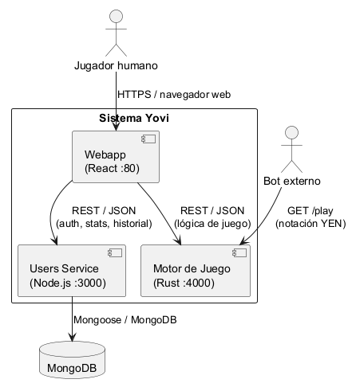
| Input al sistema | Output del sistema | Formato / Canal |
|---|---|---|
Registro / actualización de usuario |
Confirmación de operación |
JSON / HTTP |
GET /play (Parámetros: position, bot_id) |
Siguiente movimiento calculado y estado |
JSON / HTTP |
Consulta de usuarios |
Información de usuarios |
JSON / HTTP |
|
Note
|
La notación YEN es el formato estándar utilizado registrar el estado del tablero en la comunicación del motor de juego. Más información al respecto en el glosario. |
| Input al sistema | Output del sistema | Formato / Canal |
|---|---|---|
Registro de usuario |
Confirmación de registro |
HTML / JSON / HTTP |
Selección de estrategia y nivel de dificultad |
Confirmación de configuración |
HTML / JSON / HTTP |
Movimientos de la partida |
Estado de la partida en curso |
HTML / JSON / HTTP |
Consulta de resultados / estadísticas |
Resultados y estadísticas |
HTML / JSON / HTTP |
Consulta del ranking global |
Top 10 jugadores con puntuación |
HTML / JSON / HTTP |
users - Puerto 3000)-
Protocolo y Formato: HTTP y JSON.
-
Responsabilidad: Gestiona la persistencia y consulta de datos sensibles: perfiles de usuario, autenticación, almacenamiento del historial de partidas y cálculo del ranking global.
-
Integración: Permite a agentes externos y al frontend la consulta de estadísticas, historial y ranking mediante endpoints REST estándar (
GET /ranking).
gamey - Puerto 4000)-
Protocolo y Formato: HTTP, JSON y notación YEN.
-
Responsabilidad: Procesa la lógica algorítmica del Juego Y, validación de reglas en tiempo real y ejecución de estrategias de IA.
-
Interoperabilidad: Expone el método
GET /playque permite el intercambio de jugadas serializadas en notación YEN, facilitando la competición de bots externos contra el motor desarrollado en Rust.
-
Protocolo: HTTP, HTML y JSON.
-
Soporta la interacción directa de los usuarios con el frontend web.
-
Funciones principales: registro, selección de estrategia, ejecución de movimientos y consulta de estadísticas.
-
Formato HTML para visualización y JSON para llamadas internas o APIs de frontend-backend.
| Input al sistema | Output del sistema | Formato / Canal |
|---|---|---|
Datos de usuario, partidas, grupos y amistades |
Consulta y persistencia de registros |
BSON / Driver Mongoose (interno) |
-
Protocolo: Conexión interna mediante el driver de mongodb desde el servicio
users. -
Almacena: perfiles de usuario, historial de partidas, ranking, relaciones de amistad y grupos.
4. Estrategia de Solución
4.1. Resumen de la Estrategia
Nuestra estrategia principal se centra en crear un entorno donde la lógica pesada del juego (rendimiento crítico) esté completamente desacoplada de la gestión de usuarios y la interfaz (experiencia de usuario).
Esta separación nos permite asegurar que el cálculo intensivo del motor no afecte a la fluidez de la navegación web, y viceversa. A continuación, se detallan las decisiones tecnológicas y organizativas tomadas para cumplir este objetivo.
4.2. Decisiones Tecnológicas
Basándonos en los requisitos del proyecto, se han seleccionado las siguientes tecnologías para cubrir las necesidades de cada módulo:
-
Frontend:
-
React: Seleccionado para construir una interfaz de usuario rápida.
-
TypeScript: Se añade para incorporar tipado estático, reduciendo errores durante el desarrollo.
-
-
Backend:
-
Node.js: Seleccionado como el entorno idóneo para gestionar la lógica de usuarios.
-
-
Motor de Juego:
-
Rust: Elegido específicamente por su seguridad de memoria y su capacidad de ofrecer un alto rendimiento en los cálculos del juego.
-
-
Persistencia y Datos:
-
MongoDB: Base de datos no relacional elegida por la flexibilidad de su esquema y su integración con Node.js, ideal para hacer historiales de partidas y perfiles persistentes sin una estructura fija.
-
-
Pruebas de Rendimiento:
-
Gatling (Scala): Seleccionado como herramienta principal para las pruebas de carga y estrés. Se eligió por su capacidad para simular un alto volumen de usuarios concurrentes consumiendo mínimos recursos de máquina, y por la generación automática de reportes de rendimiento detallados.
-
-
Pruebas y Aseguramiento de Calidad:
-
Vitest, cargo test y Pruebas Manuales E2E: Ecosistema de pruebas unitarias y End-to-End (E2E) empleado para garantizar la fiabilidad matemática del motor de juego, el renderizado de la interfaz y la correcta integración entre los microservicios.
-
4.3. Decisiones de Organización
Para asegurar el correcto desarrollo del proyecto, el equipo ha tomado las siguientes decisiones conjuntas respecto a la metodología y gestión:
| Ámbito | Decisión y Motivación |
|---|---|
Metodología |
Seguiremos una metodología basada en reuniones semanales. Estas sesiones se utilizarán para ponerse al día, definir objetivos a corto plazo (1 semana) y tomar las decisiones importantes o cruciales para el rumbo general del proyecto. |
Gestión del Proyecto |
Usaremos GitHub como herramienta central, tanto para el control de versiones del código como para la gestión de tareas y trabajo en equipo, utilizando principalmente los Issues. |
Roles |
Hemos decidido dividirnos en subgrupos especializados, encargándose cada uno de una parte específica del proyecto (Frontend, Backend, Motor). No obstante, se mantiene la premisa de que todos los miembros deben tener un conocimiento general del proyecto completo, no solo de su parte asignada. |
Comunicación |
Además de las reuniones presenciales, mantendremos una comunicación constante y fluida a través de canales digitales como WhatsApp y Discord. |
5. Vista de Bloques de Construcción
La vista de bloques muestra la descomposición estática del sistema en bloques de construcción así como sus dependencias.
5.1. Sistema General de Caja Blanca (Nivel 1)
En este nivel se presenta la descomposición de más alto nivel del sistema Yovi, mostrando cómo interactúa con los usuarios y los sistemas externos.
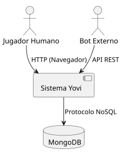
5.1.1. Motivación
El sistema Yovi está diseñado para permitir la gestión y ejecución de partidas del juego "Y" en un entorno web. La arquitectura debe soportar concurrencia y dos tipos de actores principales:
-
Usuarios Humanos: Que requieren una interfaz gráfica interactiva.
-
Bots: Que requieren una API para automatizar el juego.
5.1.2. Bloques de construcción contenidos
| Nombre | Responsabilidad |
|---|---|
Sistema Yovi |
El núcleo del proyecto. Es la caja negra que contiene toda la lógica de presentación, negocio y reglas del juego. |
Usuario (Actor) |
Jugador humano que interactúa con el sistema a través de un navegador web moderno. |
Bot Externo (Actor) |
Sistema automatizado que consume la API pública para jugar partidas contra la máquina o contra humanos. |
Base de Datos (MongoDB) |
Sistema externo encargado de la persistencia de usuarios, historiales de partidas, rankings y estadísticas. Base de datos no relacional. |
GameRecord Model |
Representa el esquema de persistencia de una partida finalizada en MongoDB, almacenando resultado, rival y metadatos. |
5.1.3. Interfaces Importantes
-
Interfaz Web (HTTP): Acceso para usuarios humanos.
-
API Pública (REST/JSON): Acceso programático para los bots y comunicación interna.
5.2. Nivel 2
Aquí se especifica la estructura interna del bloque principal "Sistema Yovi".
5.2.1. Caja Blanca: Sistema Yovi
Esta vista explota el sistema en sus contenedores principales, demostrando nuestra arquitectura orientada a microservicios donde la gestión de usuarios y la lógica matemática del juego viven en servidores distintos.
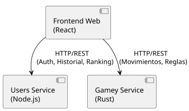
Motivación: Se ha optado por una arquitectura cliente-servidor desacoplada y dividida en microservicios. Esto permite que el motor de juego (Rust) escale o se modifique sin afectar a la gestión de sesiones de usuario (Node.js).
Bloques de construcción contenidos:
| Nombre | Responsabilidad |
|---|---|
Frontend Web |
Aplicación de Página Única (SPA). Renderiza el tablero hexagonal y gestiona la interacción del usuario. |
Users Service |
Microservicio backend (Puerto 3000). Gestiona la autenticación, perfiles, estadísticas y persistencia en base de datos. |
Gamey Service |
Microservicio del Motor (Puerto 4000). Contiene estrictamente las reglas del juego "Y", la Inteligencia Artificial y la validación de movimientos. |
5.2.2. Frontend Web
-
Propósito: Proveer una interfaz visual rápida y amigable para los jugadores humanos.
-
Interfaces: Consume las APIs REST de los microservicios backend.
-
Tecnología: React con TypeScript.
5.2.3. Users Service (Node.js)
-
Propósito: Centralizar la lógica de usuarios y seguridad. Actúa como intermediario exclusivo con la base de datos.
-
Interfaces: Expone endpoints REST para autenticación y métricas.
-
Tecnología: Node.js / Express.
5.2.4. Gamey Service (Rust)
-
Propósito: Encapsular la complejidad algorítmica del juego "Y". Asegura que las reglas se cumplan rigurosamente, manteniendo el estado de las partidas vivas en memoria.
-
Características: Módulo independiente, concurrente, testeable unitariamente y que expone la IA.
5.3. Nivel 3
Aquí especificamos la estructura interna de los Microservicios Backend, detallando sus componentes internos.
5.3.1. Caja Blanca: Microservicios Backend
El Backend se divide físicamente en dos servicios independientes, cada uno con su propia estructura interna adaptada a su tecnología.
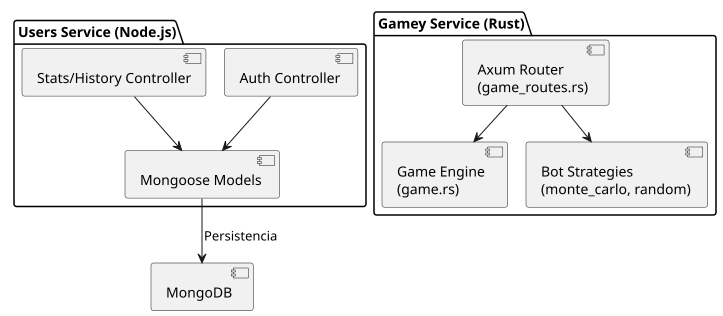
Bloques de construcción contenidos:
| Nombre | Responsabilidad |
|---|---|
Auth & Stats Controllers (Node) |
Rutas de Express que gestionan el registro, login y la agregación matemática para el cálculo del ranking. |
Mongoose Models |
Capa de abstracción de datos (ORM) para comunicar Node.js con MongoDB de forma segura. |
Axum Router (Rust) |
Gestiona las peticiones de red (HTTP REST) relacionadas con el juego, inyectando el estado concurrente. |
Game Engine (Rust) |
Cerebro de la ejecución. Recibe intentos de movimiento, actualiza el estado del tablero y detecta la condición de victoria (algoritmo Union-Find). |
Bot Strategies (Rust) |
Módulos de Inteligencia Artificial que evalúan el tablero y devuelven la mejor coordenada posible según su dificultad. |
5.3.2. Auth & Stats Controllers (Node.js)
-
Propósito: Mantener una navegación segura gestionando sesiones y cálculos estadísticos.
-
Responsabilidades: Registro, Login, consulta del historial de MongoDB y cálculo algorítmico del ranking ponderado.
5.3.3. Axum Router & Game Engine (Rust)
-
Propósito: Cerebro de la ejecución de la partida. Inyecta el estado concurrente (
Mutex), recibe intentos de movimiento, consulta la validez de la geometría del tablero, actualiza el estado y dictamina el ganador.
5.3.4. Bot Strategies (Rust)
-
Propósito: Implementaciones algorítmicas de la Inteligencia Artificial (Monte Carlo, Random, etc.) que evalúan el tablero de forma aislada para devolver la jugada óptima.
5.3.5. Mongoose Models (Capa de Persistencia)
-
Propósito: Aislar las consultas y el mapeo de datos de MongoDB del resto de la lógica de negocio del servicio de usuarios.
5.3.6. Esquema de Base de Datos (Modelo Relacional en MongoDB)
A pesar de utilizar una base de datos NoSQL, el sistema mantiene una relación lógica entre los usuarios y sus registros de juego. El username actúa como clave de enlace entre ambas colecciones.
| Colección | Campo | Descripción |
|---|---|---|
Users |
|
Identificador único del usuario (Clave primaria lógica). |
|
Hash de la contraseña del usuario. |
|
|
Fecha de registro del usuario. |
|
GameRecords |
|
Referencia al usuario que jugó la partida (Jugador 1). |
|
Nombre del oponente o bot (Jugador 2). |
|
|
'1' si ganó el usuario, '2' si ganó el rival. |
|
|
Tamaño del tablero (ej. 7, 11). |
|
|
Marca de tiempo de la partida (Fecha del historial). |
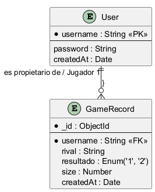
6. Vista en Tiempo de Ejecución
Esta sección describe cómo se comportan los componentes del sistema durante la ejecución, mostrando los flujos más relevantes mediante diagramas de secuencia.
6.1. Escenario 1: Registro e inicio de sesión
El usuario accede a la aplicación e introduce sus credenciales. El servicio users valida los datos y devuelve un token de sesión.
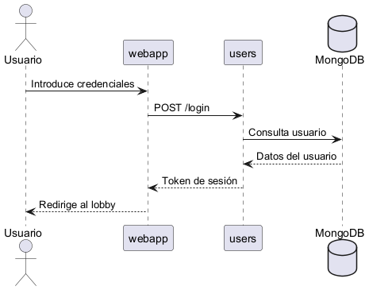
6.2. Escenario 2: Inicio de partida
El usuario configura una nueva partida eligiendo tamaño del tablero, tipo de oponente y, si es bot, estrategia y nivel.
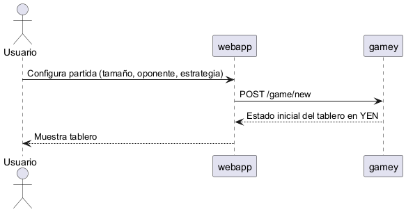
6.3. Escenario 3: Turno de juego contra el bot
El usuario hace clic en una celda. El frontend envía el movimiento al motor de juego, que lo valida, comprueba si hay ganador y calcula la respuesta del bot.
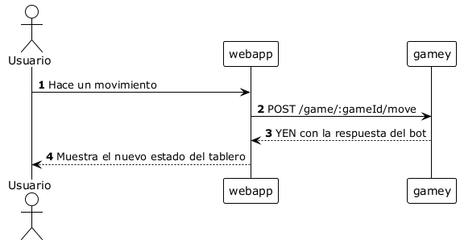
6.4. Escenario 4: Fin de partida y guardado en historial
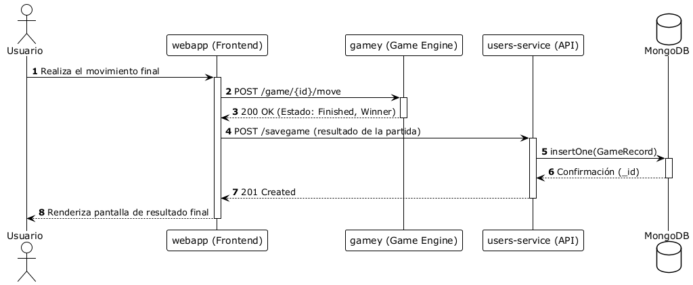
6.5. Escenario 5: Consulta general del historial
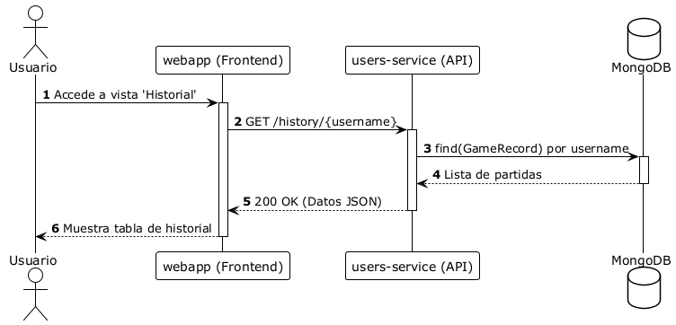
6.6. Escenario 6: Consulta de historial con filtrado
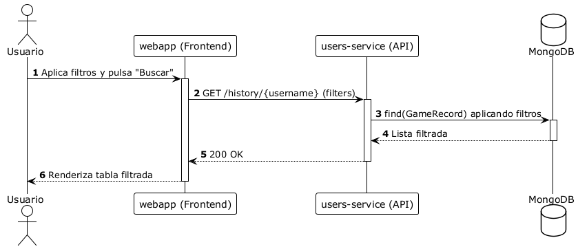
6.7. Escenario 7: Consulta del Ranking Global
El usuario accede a la vista de ranking. El frontend solicita al servicio users el top 10 de jugadores. El servicio agrega los registros de partidas de MongoDB, calcula la puntuación ponderada de cada jugador y devuelve la lista ordenada. El jugador logueado aparece resaltado en la tabla.
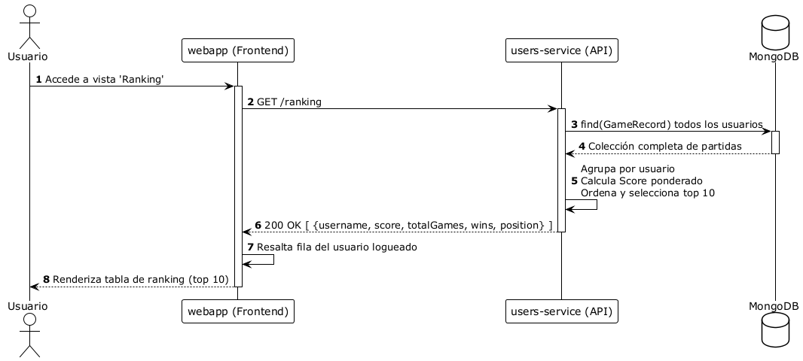
6.8. Escenario 8: Cierre de sesión
El usuario cierra su sesión desde la interfaz. El frontend elimina los datos locales (localStorage) y notifica al servicio users, que invalida la sesión en la base de datos.
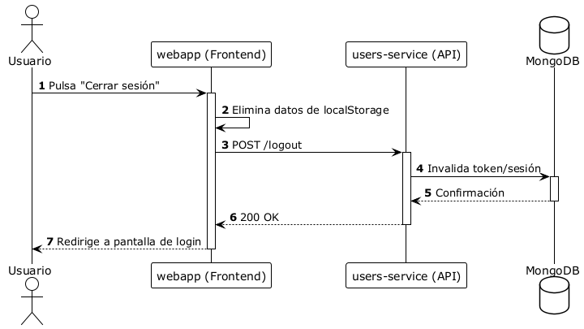
7. Vista de Despliegue
7.1. Infrastructure Level 1
El sistema YOVI está desplegado en Microsoft Azure mediante contenedores Docker orquestados con Docker Compose. El sistema se compone de tres microservicios independientes que se comunican entre sí a través de sus respectivas APIs REST.
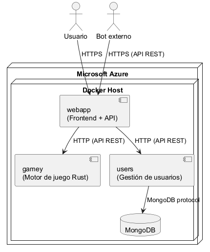
| Componente | Tecnología | Responsabilidad |
|---|---|---|
webapp |
React / TypeScript |
Servidor web estático (ej. Nginx o Node estático) que sirve la interfaz de usuario (Single Page Application) al navegador del jugador. |
gamey |
Rust / Axum |
Microservicio del Motor de Juego. Valida movimientos, detecta victorias y expone el endpoint público de la IA para los bots externos. |
users |
Node.js / Express |
Microservicio backend que gestiona el registro, la autenticación, el cálculo de rankings y el historial de partidas. |
MongoDB |
MongoDB |
Base de datos documental persistente e interna. Solo accesible por el servicio de |
Se ha optado por un despliegue basado en contenedores Docker sobre Azure para facilitar la portabilidad, el aislamiento entre servicios y la automatización del despliegue mediante integración continua. Docker Compose permite levantar y coordinar todos los servicios con un único comando tanto en local como en producción.
8. Conceptos transversales
8.1. Conceptos de Dominio
El modelo de dominio gira en torno al juego de estrategia "Y".
-
Partida: La entidad central que mantiene el estado del tablero triangular, el turno actual y la validación de las reglas. Utiliza algoritmos de búsqueda para detectar si se han conectado los tres lados del tablero.
-
Tablero: Un tablero triangular dividio en celdas hexagonales.
-
Coordenadas: Debido a la naturaleza hexagonal del tablero, se utiliza un sistema de coordenadas específico para identificar cada celda y calcular adyacencias de forma eficiente.
-
Jugador: Puede ser un usuario humano autenticado o un Bot.
8.2. Sistema de Puntuación y Ranking
Para que el ranking global sea justo y evitar que los jugadores suban al top jugando exclusivamente contra bots de nivel fácil, el sistema YOVI no utiliza un simple conteo de victorias, sino un algoritmo de puntuación ponderada.
En lugar de que cada victoria valga 1 punto, el backend calcula la puntuación de cada jugador basándose en estas cuatro reglas:
-
1. Dificultad del rival: No todas las victorias valen lo mismo. Ganar al bot aleatorio otorga un multiplicador bajo (x1), ganar a otros jugadores humanos da más puntos (x5), y derrotar a la IA más avanzada (Monte Carlo) otorga el multiplicador máximo (x7).
-
2. Número de victorias: Es el factor principal; cuantas más veces derrotes a un rival concreto, más puntos acumulas.
-
3. Filtro anti-suerte (Confianza estadística): Si un jugador juega una sola partida contra la IA difícil y la gana por suerte, tendría un "100% de victorias". Para evitar que esto rompa el ranking, el sistema exige un mínimo de volumen. Si juegas pocas partidas, recibes solo una fracción de los puntos. Necesitas jugar unas 30 partidas contra un mismo rival para que el sistema confíe en tu nivel y te dé el 100% de tus puntos.
-
4. Bonus de eficacia: Si ganas muchas partidas y pierdes muy pocas contra un mismo oponente, el sistema te premia con un pequeño porcentaje extra de puntos.
Desde la perspectiva de la experiencia de usuario, dado que este sistema genera situaciones donde un jugador con menos victorias totales puede superar en el ranking a otro (por haber jugado partidas más difíciles), la interfaz web incluye una ventana explicativa con mucho detalle en la cabecera del ranking para explicar el sistema de puntuación a los jugadores.
8.3. Experiencia de Usuario (UX)
-
Visualización del Tablero: Dado que el tablero hexagonal no es común, la interfaz debe traducir las coordenadas lógicas (x, y, z) a una posición visual en pantalla (píxeles). Se emplearán ayudas visuales para resaltar las celdas adyacentes y los movimientos válidos.
-
Feedback Inmediato: La interfaz bloquea visualmente acciones ilegales antes de enviarlas al servidor para mejorar la reactividad, aunque la validación final siempre reside en el backend.
-
Diseño Adaptable: La interfaz se adapta a diferentes tamaños de tablero, asegurando que el tablero triangular sea jugable tanto en su tamaño mínimo (4) como máximo (30).
8.4. Prototipos de pantallas
Los prototipos originales de las pantallas del proyecto tal y como se diseñaron en las reuniones perativas se pueden encontrar a continuación:
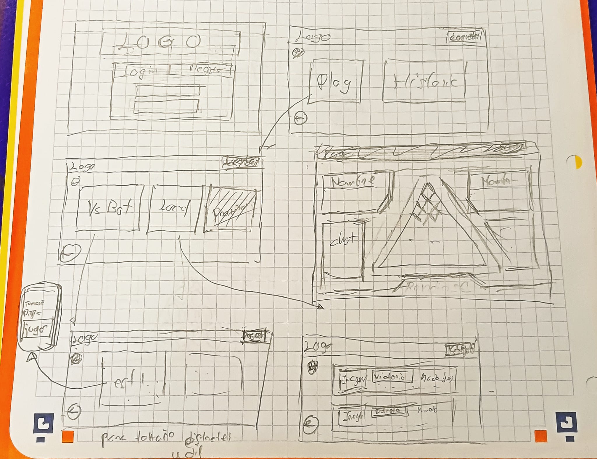
Cabe destacar que estos prototipos se han utilizado como referencia para el desarrollo de la interfaz de usuario, aunque se han realizado ajustes durante el proceso de implementación para mejorar la usabilidad y adaptarse a las limitaciones técnicas.
8.5. Seguridad
-
Validación en el Servidor: Aunque la web avise de errores. Todas las jugadas se validan de nuevo en el servidor para evitar trampas.
-
Autoridad del Servidor: El frontend es solo una capa de presentación. El estado real de la partida reside en los microservicios. Esto evita que los usuarios manipulen el cliente para ganar.
8.6. Arquitectura
-
Microservicios Desacoplados: El sistema no es un único bloque, sino que está dividido en servicios independientes (Node.js y Rust). Esto permite aislar la carga de procesamiento matemático del juego de la gestión de sesiones de usuario.
-
Comunicación Directa (Cliente-Servidor): El frontend (React) actúa como orquestador de las peticiones, comunicándose directamente mediante HTTP/REST con el servicio correspondiente (Puerto 3000 para usuarios, Puerto 4000 para juego) sin intermediarios, optimizando la latencia de red.
8.7. Desarrollo y Operaciones
-
Comunicación (JSON): Todas las partes del sistema intercambian información utilizando el formato estándar JSON, lo que garantiza la compatibilidad entre el frontend y el backend.
-
Gestión de Errores: Se utilizan los códigos estándar de la web para indicar claramente si una acción ha funcionado o por qué ha fallado, facilitando la corrección de problemas.
-
Persistencia de Datos: La información crítica, como los usuarios registrados y el historial de partidas terminadas, se almacena de forma segura en una base de datos MongoDB.
-
Estrategia de Pruebas: Para asegurar la calidad y el rendimiento del sistema bajo estrés, se ha integrado la herramienta Gatling en el flujo de desarrollo. Los scripts de simulación (escritos en Scala) se encuentran dentro del repositorio en la carpeta PruebaCarga. Esto permite a cualquier desarrollador del equipo levantar el entorno local de Docker y lanzar los tests de concurrencia para validar que sus cambios no han degradado el rendimiento del servidor antes de realizar un despliegue.
8.8. Diseño y Documentación de la API
El sistema YOVI utiliza una arquitectura orientada a servicios que se comunican mediante APIs RESTful sobre HTTP. Se ha establecido JSON como formato estándar y universal de intercambio de datos para todos los módulos.
La API se divide lógicamente en dos grandes bloques de responsabilidad, separados por puertos e instancias de despliegue:
8.8.1. API de Gestión de Usuarios (Node.js - Puerto 3000)
Este servicio centraliza la persistencia, la seguridad y el componente social del juego. Sus rutas principales incluyen:
-
Autenticación y Seguridad:
-
POST /createuser y POST /login: Gestión de credenciales y generación de sesiones.
-
-
Historial y Estadísticas:
-
POST /savegame: Registra el resultado final de una partida.
-
GET /history/{username}: Recupera el listado de partidas (soporta filtros por query params).
-
GET /stats/{username} y GET /ranking: Agregación de datos y cálculo de la puntuación ponderada.
-
-
Componente Social:
-
GET /user/{username}, POST /addfriend/{username}, DELETE /removefriend/{username}.
-
Gestión completa de grupos (/creategroup, /joingroup, /mygroups, etc.).
-
8.8.2. API del Motor de Juego (Rust/Axum - Puerto 4000)
Este servicio, altamente optimizado, expone la lógica pura del juego "Y", la validación de movimientos y los motores de Inteligencia Artificial (Bots).
-
Gestión Interna de Partidas (Usado por el Frontend):
-
POST /game/new: Inicializa un tablero en memoria, asigna un UUID y devuelve el estado inicial.
-
GET /game/{game_id}: Recupera el estado de ocupación y el turno actual del tablero.
-
POST /game/{game_id}/move: Procesa un movimiento (place, resign, timeout). Si la partida es contra la IA, el frontend puede adjuntar el identificador del bot en la petición para que el motor encadene el movimiento humano y la respuesta de la máquina en una sola transacción.
-
8.8.3. API Pública para Torneos y Bots Externos
Para cumplir con el requisito de interoperabilidad y permitir que bots desarrollados por terceros compitan contra nuestro motor, se expone un endpoint público que actúa sin necesidad de estado previo (Stateless):
-
GET /play
-
Propósito: Permite a un bot externo solicitar cuál sería el siguiente mejor movimiento dado un estado de tablero concreto.
-
Parámetros: position: Un string que contiene un JSON serializado con el formato de notación YEN (tamaño, turno, jugadores y layout). bot_id (opcional): El nombre de la estrategia de la IA a consultar (ej. monte_carlo_bot, random_bot).
-
Respuesta: El servidor reconstruye el tablero en memoria, evalúa la jugada y devuelve las coordenadas espaciales {"coords": {"x": 0, "y": 1, "z": 2}} o, en caso de estar bloqueado, la acción {"action": "resign"}.
-
Ejemplo de llamada:
curl -G "http://localhost:4000/play" \
--data-urlencode "position={\"size\":3,\"turn\":0,\"players\":[\"B\",\"R\"],\"layout\":\"./../...\"}"Respuesta del servidor:
{
"coords": {
"x": 0,
"y": 0,
"z": 2
}
}9. Decisiones de Arquitectura
9.1. Introducción
En esta sección documentamos las decisiones arquitectónicas significativas que darán forma a la estructura, el despliegue y la tecnología del sistema YOVI. Estas decisiones se tomarán considerando los requisitos no funcionales, las restricciones del proyecto y la experiencia del equipo de desarrollo.
El objetivo de este registro es proporcionar trazabilidad y justificación sobre por qué se eligieron ciertas soluciones frente a otras alternativas disponibles, utilizando el formato de registros de decisión (ADR).
9.2. ADR-001: Uso de MongoDB como base de datos
-
Estatus: Aceptado.
-
Contexto: Se necesitaba persistir información de usuarios y su historial de partidas.
-
Decisión: Se utilizará MongoDB como base de datos, en lugar de una base de datos relacional como PostgreSQL o MySQL.
-
Justificación: Consideramos una mejor decisión el uso de una base de datos NoSQL como MongoDB debido a la simplicidad del modelo de datos y la ausencia de relaciones complejas. MongoDB permite almacenar documentos JSON, lo que se simplifica mucho la gestión de la información de los usuarios y su historial de partidas sin necesidad de diseñar esquemas rígidos o realizar migraciones frecuentes.
De hecho, gracias a la flexibilidad en el esquema que proporciona Mongo, pudímos despreocuparnos en gran medida de la información relacionada con el historial y las estadísticas de cada usuario, lo que nos permitió centrarnos e ir poco a poco con el proyecto.
Por último, la integración con el microservicio de usuarios en Node.js es directa mediante Mongoose, lo que facilita el desarrollo y mantenimiento del sistema. Por no hablar de que los miembros de equipo ya teníamos cierta experiencia con bases de datos no relacionales y consideramos interesante prácticar el uso de MongoDB.
-
Alternativas consideradas: PostgreSQL / MySQL → Descartadas por añadir complejidad innecesaria (esquemas rígidos, migraciones) para un modelo de datos tan simple y sin relaciones entre entidades.
-
Consecuencias:
-
El esquema es flexible y fácil de extender.
-
No se dispone de validación de integridad referencial a nivel de base de datos, aunque no resulta especialmente relevante dada nuestra estructura de datos.
-
La integración con el microservicio de usuarios en Node.js es directa mediante Mongoose.
-
9.3. ADR 002: Estrategia de filtrado en el historial de partidas
-
Estatus: Aceptado.
-
Contexto: El usuario necesita consultar miles de registros. Realizar peticiones por cada pulsación de tecla (live search) saturaría el servicio de usuarios.
-
Decisión: Se implementa un estado temporal en el Frontend para el input de "Rival" y una ejecución "Lazy" de la búsqueda. La petición a la API solo se dispara al pulsar el botón "Buscar".
-
Consecuencias: Mejora del rendimiento de red y reducción de carga en MongoDB.
9.4. ADR-003: Fórmula de puntuación ponderada para el ranking global
-
Estatus: Aceptado.
-
Contexto: Al añadir el ranking global se necesitaba una métrica de ordenación justa. Las alternativas triviales (victorias totales, ratio de victorias) tienen sesgos bien conocidos: la primera ignora la dificultad del rival, la segunda infla a jugadores con muy pocas partidas.
-
Decisión: Se utiliza la siguiente fórmula, calculada en tiempo real en
GET /rankingagregando la colecciónGameRecords:
Score(j) = Σ d(i) · V_i · C(N_i) · (1 + V_i/N_i)
donde:
d(i) = peso de dificultad del rival i
V_i = victorias contra el rival i [factor dominante]
C(N) = 1 − exp(−N / K) [confianza estadística, K=10: ~30 partidas para confianza plena]
(1 + V_i/N_i) = bonus de eficacia ∈ (1,2] [α=1.0: bonus significativo pero no principal]Los pesos de dificultad asignados son:
| Rival | d(i) |
|---|---|
random_bot |
1.0 |
offensive_easy / defensive_easy / positional_easy |
1.5 |
offensive_medium / defensive_medium / positional_medium |
2.5 |
offensive_hard / defensive_hard / positional_hard |
4.0 |
Jugador humano |
5.0 |
monte_carlo_bot |
7.0 |
-
Desglose matemático de los factores:
-
d(i)— Peso de dificultad: escala la contribución de cada rival según su complejidad algorítmica. Va de 1.0 (random_bot) a 7.0 (monte_carlo_bot). Los jugadores humanos reciben 5.0 por su imprevisibilidad. -
V_i— Victorias absolutas (factor dominante): usar las victorias en bruto en lugar del ratioV/Nhace que jugar más partidas siempre aporte puntos positivos. Premia la actividad sostenida, no solo la eficacia puntual. -
C(N) = 1 − exp(−N/10)— Factor de confianza estadística: función creciente que satura hacia 1 conforme crece la muestra. Con 1 partidaC ≈ 0.10, con 10 partidasC ≈ 0.63, con 30 partidasC ≈ 0.95. Evita que una única victoria infle artificialmente la puntuación. -
(1 + V_i/N_i)— Bonus de eficacia (α = 1.0): término multiplicativo ∈ (1, 2] que añade hasta un 100 % extra cuando el jugador gana todas las partidas contra ese rival (V/N = 1 → factor = 2). Si no gana ninguna (V/N = 0 → factor = 1) no penaliza, simplemente no bonifica. Es un bonus significativo pero nunca el factor principal.
A modo de ejemplo numérico, un jugador con 5 victorias en 10 partidas contra
monte_carlo_bot(d = 7.0) obtiene:+
C(10) = 1 − exp(−10/10) ≈ 0.632 bonus = 1 + 5/10 = 1.5 aporte = 7.0 · 5 · 0.632 · 1.5 ≈ 33.18 puntos -
-
Alternativas consideradas:
-
Victorias totales → Descartada. Ignora la dificultad del rival.
-
Ratio puro V/N → Descartada. Una sola victoria da ratio 100 %, inflando el ranking con muestras mínimas.
-
ELO → Descartada. Requiere estado persistente adicional y lógica de actualización bidireccional tras cada partida, añadiendo complejidad sin ventaja real dado el volumen de datos del sistema.
-
-
Consecuencias:
-
El ranking premia simultáneamente actividad (victorias absolutas), calidad (bonus de eficacia) y rigor estadístico (confianza).
-
El cálculo en tiempo real puede degradarse con un volumen muy elevado de
GameRecords. Mitigable con un índice MongoDB sobreusername. -
Incorporar un nuevo bot requiere únicamente asignarle un peso en
RIVAL_WEIGHTSdel serviciousers.
-
9.5. ADR-004: Ausencia de Gateway — Acceso directo a microservicios
-
Estatus: Aceptado.
-
Contexto: En una arquitectura de microservicios, como vimos más tarde en clase, es habitual centralizar el tráfico entrante a través de un gateway que actúe como punto único de entrada. Para el momento de tomar esta decisión teníamos que definir el cómo hacer la API públca para los bots externos.
-
Decisión: Se descarta el uso de un gateway centralizado. En su lugar:
-
La webapp (React) accede directamente a
userspara operaciones hacer las operaciones relacionadas con la gestión de usuarios y directamente agameypara la lógica del juego. -
Los bots externos acceden directamente al motor de juego mediante
GET /playen notación YEN, sin intermediario.
-
-
Justificación: Consideramos que añadir una gateway sería complicar la arquitectura de forma innecesaria en vista de la poca cantidad de endpoints disponibles y la simplicidad de estos. Además, en vista de que nuestra aplicación no está diseñada para manejar un amplio tráfico de bots externos o usuarios, por lo que resolvimos tomar la opción más sencilla de implementar.
-
Alternativas consideradas:
-
nginx como reverse proxy → Descartado. Añade configuración adicional sin aportar valor real dado que no hay colisión de puertos ni necesidad de balanceo de carga con el volumen actual.
-
Gateway Node.js propio → Descartado. Requeriría desarrollo y mantenimiento de una capa extra que duplicaría lógica ya presente en la webapp.
-
-
Consecuencias:
-
La arquitectura es más simple y fácil de desplegar y depurar.
-
La webapp asume la responsabilidad de seleccionar el servicio correcto en cada operación, acoplando ligeramente el frontend a la topología de servicios.
-
Si en el futuro se añaden más microservicios o se requiere autenticación centralizada, la introducción de un gateway sería la evolución natural del sistema que resultaría sencilla de implementar.
-
9.6. ADR-005: Política de Saneamiento Estricto (Allowlist) en la Comunicación
-
Estatus: Aceptado.
-
Contexto: Durante el análisis de código estático con SonarCloud, se identificaron vulnerabilidades críticas de seguridad. Estas ocurrían al inyectar parámetros del usuario directamente en las rutas de las peticiones HTTP (fetch).
-
Decisión: Se rechaza el uso de comentarios de evasión (// NOSONAR) o listas de bloqueo de caracteres. En su lugar, se implementa una política de Validación por Lista Blanca (Allowlist).
-
Justificación: Se ha centralizado la seguridad en una función (sanitizeParam) que utiliza una expresión regular estricta (^[a-zA-Z0-9_-]+$). Esto asegura matemáticamente que cualquier dato que viaje hacia los microservicios sea inofensivo, bloqueando la petición en el cliente si se detectan caracteres de inyección (/, . o scripts).
-
Alternativas consideradas:
-
// NOSONAR: Descartado por ser un antipatrón que oculta riesgos reales.
-
-
Consecuencias:
-
Mitigación efectiva de ataques de inyección en la URL.
-
Cumplimiento estricto de los estándares de seguridad de SonarCloud.
-
Ligera pérdida de flexibilidad en los nombres de usuario permitidos (restringidos a caracteres alfanuméricos y guiones).
-
10. Requisitos de Calidad
10.1. Introducción
El objetivo principal de esta sección es definir las metas de calidad que el sistema YOVI debe cumplir para asegurar una experiencia de usuario satisfactoria. Mientras que los requisitos funcionales describen qué hace el sistema, los requerimientos de calidad describen cómo de bien debe funcionar bajo condiciones específicas.
Para estructurar estas metas, utilizamos las herramientas detalladas en los siguientes apartados:
-
Árbol de Calidad: Una representación jerárquica que desglosa los atributos de calidad de alto nivel.
-
Escenarios de Calidad: Descripciones detalladas que permiten evaluar si el sistema cumple con las expectativas de los stakeholders.
10.2. Arbol de calidad
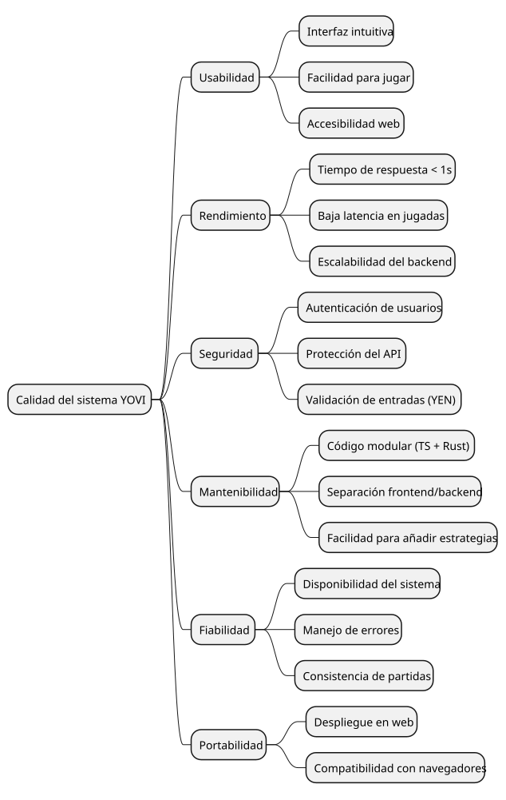
10.3. Escenarios de Calidad
10.3.1. Rendimiento
| Atributo | Escenario | Estímulo | Respuesta esperada | Métrica |
|---|---|---|---|---|
Rendimiento |
Jugada contra un bot |
El usuario realiza un movimiento |
El sistema calcula y devuelve la siguiente jugada usando el motor en Rust |
< 0.5 segundo |
Rendimiento |
Uso simultáneo |
20 usuarios jugando simultáneamente |
El sistema responde sin degradación significativa |
< 1 segundos por respuesta |
10.3.2. Usabilidad
| Atributo | Escenario | Estímulo | Respuesta esperada | Métrica |
|---|---|---|---|---|
Usabilidad |
Nuevo usuario |
Un usuario accede por primera vez |
Puede iniciar una partida sin necesidad de instrucciones complejas |
< 1 minuto |
Usabilidad |
Selección de estrategia |
El usuario cambia la estrategia y o la dificultad |
El sistema aplica correctamente la nueva configuración |
Sin errores y < 10s |
10.3.3. Seguridad
| Atributo | Escenario | Estímulo | Respuesta esperada | Métrica |
|---|---|---|---|---|
Seguridad |
Acceso no autorizado |
Un usuario no autenticado intenta acceder a funcionalidades restringidas |
El sistema deniega el acceso |
100% bloqueado |
Seguridad |
Entrada inválida |
Se envía un JSON en formato YEN incorrecto |
El sistema rechaza la petición con un error controlado |
0 fallos no controlados |
10.3.4. Mantenibilidad
| Atributo | Escenario | Estímulo | Respuesta esperada | Métrica |
|---|---|---|---|---|
Mantenibilidad |
Nueva estrategia de bot |
Se implementa un nuevo algoritmo de juego |
Se integra sin afectar al resto del sistema |
Solo hace falta implementarlo |
Mantenibilidad |
Cambio en API |
Se modifica un endpoint |
Los cambios están localizados sin afectar otros módulos |
Bajo acoplamiento |
10.3.5. Fiabilidad
| Atributo | Escenario | Estímulo | Respuesta esperada | Métrica |
|---|---|---|---|---|
Fiabilidad |
Partida en curso |
Se produce un fallo temporal |
El estado de la partida se mantiene consistente |
0 pérdida de datos |
Fiabilidad |
Partida en curso |
Cae el motor de juego |
El sistema maneja el error |
La base de datos queda en un estado consistente |
10.3.6. Portabilidad
| Atributo | Escenario | Estímulo | Respuesta esperada | Métrica |
|---|---|---|---|---|
Portabilidad |
Compatibilidad de navegador |
El usuario accede desde distintos navegadores |
La aplicación funciona correctamente |
100% funcionalidad |
Portabilidad |
Despliegue |
La aplicación se despliega en un servidor |
El sistema es accesible vía web |
Disponible 24/7 (Siempre que el servidor esté activo) |
10.4. Validacion de Rendimiento (Pruebas de Carga)
Para comprobar el rendimiento del proyecto, el equipo de desarrollo ha diseñado y ejecutado pruebas de estrés utilizando la herramienta Gatling.
1. Estrategia y Escenario de la Prueba:
Se diseñó el script TestCargaLoginJugar.scala para simular el flujo completo y realista de un usuario interactuando con el sistema. Cada usuario virtual ejecuta secuencialmente las siguientes acciones:
-
Petición POST a
/loginpara autenticarse en el sistema. -
Petición POST a
/game/newpara iniciar una partida local contra un invitado. -
Intercambio de 4 turnos: Peticiones POST a
/game/{id}/movesimulando la colocación de 4 fichas en el tablero. -
Rendición: Nueva petición a
/game/{id}/moveenviando la acción de rendición de uno de los jugadores. -
Petición POST a
/savegame, ejecutada automáticamente por el sistema al volver al menú para registrar el resultado final en el historial.
Para simular el comportamiento humano real, se han intercalado tiempos de lectura o de pensar la jugada (pause(1), pause(6)….) entre cada petición.
2. Configuración de la Carga:
Se configuró una inyección progresiva de carga (Ramp-up) estableciendo 50 usuarios concurrentes a lo largo de 30 segundos mediante la instrucción rampUsers(50).during(30.seconds).
3. Resultados Obtenidos:
A continuación, se muestra la gráfica de distribución de peticiones y el estado general de las ejecuciones junto a los tiempos de respuesta extraído del informe de Gatling:

Tras analizar los datos del reporte (index.html), se extraen las siguientes métricas clave:
-
Volumen total: Se ejecutaron un total de 950 peticiones HTTP.
-
Tiempos de respuesta (Rendimiento): El servidor mostró una velocidad excelente. El 95º percentil de tiempo de respuesta se mantuvo por debajo de los 350ms, y la gran mayoría de peticiones OK se resolvieron en menos de 50ms.
-
Tasa de Éxito y Errores:
-
Peticiones OK: 750 (79%)
-
Peticiones KO: 200 (21%)
-
4. Conclusión Arquitectónica e Identificación de Deuda Técnica: La prueba confirma que el servidor (desarrollado en Rust) soporta la carga de 50 usuarios simultáneos sin colapsar y manteniendo tiempos de respuesta óptimos.
Es importante destacar que los errores registrados (código HTTP 422) demuestran que la seguridad del backend funciona a la perfección. Al simular movimientos a tan alta velocidad, el script intentó realizar acciones inválidas (como poner una ficha en una casilla ya ocupada). El servidor procesó estas reglas correctamente y bloqueó las trampas, lo que confirma la solidez del sistema incluso bajo estrés.
11. Riesgos y Deudas Técnicas
11.1. Riesgos
Para valorar la importancia de cada riesgo se utiliza una escala de impacto en tres niveles: Alto, Medio, Bajo.
| Riesgo | Estrategia de mitigación | Impacto |
|---|---|---|
Experiencia limitada en determinadas herramientas o lenguajes |
La falta de dominio homogéneo en las tecnologías seleccionadas puede generar retrasos o errores de implementación. Se priorizarán tecnologías conocidas por la mayoría del equipo y se fomentará el intercambio de conocimientos mediante sesiones internas y trabajo colaborativo. |
Bajo |
Posibles modificaciones en los requisitos funcionales o no funcionales |
La estructura modular del proyecto ayudará a mitigar este riesgo. |
Medio |
Escasa experiencia previa de trabajo conjunto |
Al no haber colaborado anteriormente, pueden surgir dificultades iniciales de coordinación. Para minimizar este riesgo se definirán canales de comunicación claros y seguimiento continuo del progreso. |
Bajo |
Plazos de entrega junto a otras asignaturas |
En determinados periodos de tiempo es probable que se junten entregas de avrais asignaturas a la vez, esto se mitigará a través de un trabajo organizado y con tiempo. |
Alto |
Tamaño amplio del equipo |
Un número elevado de integrantes puede dificultar la sincronización del trabajo y la toma de decisiones. Se establecerán roles definidos, reuniones estructuradas y documentación compartida para mantener la organización. |
Medio |
Crecimiento desmedido de la colección de Historial |
El almacenamiento de cada partida finalizada puede degradar el rendimiento de las consultas. Se mitigará mediante la indexación del campo |
Bajo |
11.2. Deuda Técnica
1. Optimización de CSS y Diseño Responsivo Extremo Aunque el frontend es completamente funcional y el tablero se renderiza de forma correcta, la estructura CSS requiere una refactorización profunda. Actualmente existen limitaciones en la adaptabilidad a pantallas de móviles muy pequeñas, quedando como deuda técnica la migración a un framework de utilidades CSS más robusto o la reescritura de los media queries.
2. Soporte Multijugador en Red (Ausencia de WebSockets) El motor actual procesa los turnos en un modelo de petición/respuesta síncrono (REST). Si en el futuro se desea escalar el proyecto para permitir partidas entre humanos en distintos ordenadores (multijugador real-time remoto), será necesario refactorizar la capa de red del servicio gamey para integrar WebSockets.
12. Estrategia de Pruebas
En esta sección se describe la estrategia de aseguramiento de la calidad (QA) seguida durante el desarrollo de Yovi, detallando los diferentes niveles de pruebas realizados para garantizar la robustez del sistema.
12.1. Pruebas Unitarias
Los tests unitarios son pruebas automatizadas que verifican el comportamiento del codigo ejecutable. Su objetivo es garantizar que cada pieza funciona correctamente por sí sola y detectar problemas de comportamiento.
En estas pruebas utilizamos mocks para sustituir módulos externos y servicios, ya que lo que nos interesa es validar la lógica de cada fragmento y no el comportamiento del sistema completo.
12.1.1. Tests del Frontend (Webapp)
En webapp se utiliza Vitest como framework de testing junto con React Testing Library para el renderizado y simulación de interacciones de componentes.
A continuación se describen los tests unitarios más relevantes de la webapp:
Hook useGame — Lógica principal del juego
El hook useGame centraliza toda la lógica del juego: creación de partidas, gestión de
turnos, movimientos, rendición y timeout.
Los tests verifican entre otras cosas que el hook arranca en estado loading y transiciona
a ongoing tras crear la partida, que los movimientos actualizan correctamente el estado
del tablero y el turno, que la rendición termina la partida con el ganador correcto, y que
los errores de red se capturan y exponen al componente.
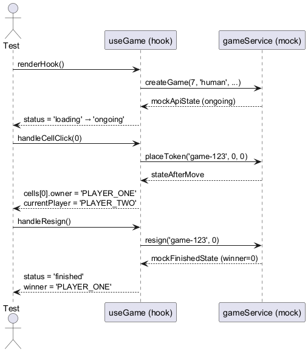
GameService — Capa de comunicación con la API
El módulo gameService encapsula todas las llamadas HTTP al backend: creación de partidas,
movimientos, historial, estadísticas, ranking, amigos y grupos. Sus tests verifican que
cada función llama al endpoint correcto.
Aquí un ejemplo de caso probado:
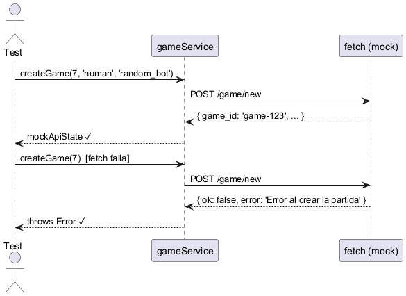
Historic — Historial de partidas con filtros
El componente Historic muestra el historial de partidas del usuario y permite filtrarlo. Sus tests cubren la carga inicial de datos, los estados de error y vacío, y la interacción con los filtros.
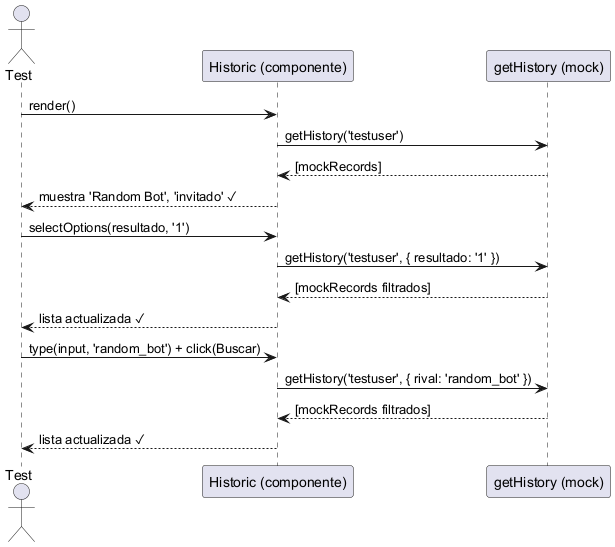
RegisterForm — Autenticación de usuarios
El componente AuthForm gestiona tanto el login como el registro de usuarios. Sus tests
verifican el flujo completo de autenticación: validación de campos, manejo de errores del
servidor, almacenamiento del usuario en localStorage tras un login exitoso, y la
navegación al menú principal.
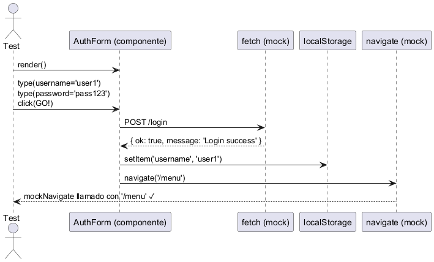
12.1.2. Tests de Datos (Users)
El servicio de usuarios es el microservicio central que gestiona la autenticación, el historial de partidas, las estadísticas, el ranking y las relaciones sociales entre jugadores. Sus tests utilizan Vitest junto con Supertest para realizar peticiones HTTP reales contra la aplicación sin necesidad de un servidor externo.
12.1.3. Hashing — Seguridad de contraseñas
El módulo Hashing encapsula el cifrado y verificación de contraseñas usando el algoritmo Argon2id. Sus tests verifican que las contraseñas se almacenan siempre cifradas, que la verificación funciona correctamente tanto para contraseñas válidas como incorrectas, y que los
errores internos del algoritmo se capturan sin romper la aplicación.
Algunos ejemplos de los tests:
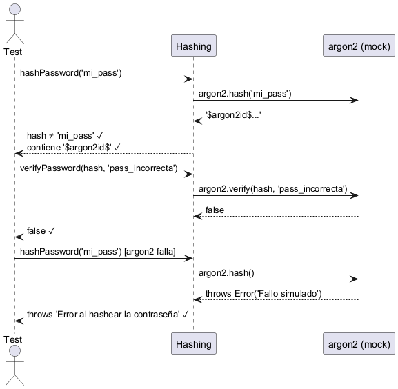
12.1.4. History — Historial de partidas
El endpoint /history/:username permite consultar el historial de partidas de un
usuario con múltiples filtros opcionales: resultado, rival… Sus tests cubren el caso base de carga de partidas, la validación de cada parámetro de filtrado, entre otros.
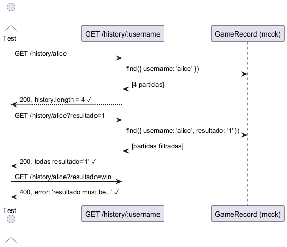
12.1.5. Users Service — Endpoints principales
El archivo users-service.test.js cubre de forma integral todos los endpoints del microservicio: registro y login de usuarios, guardado de partidas…
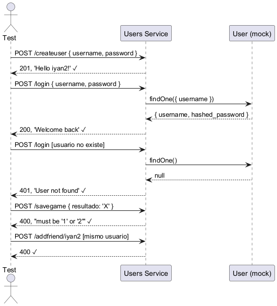
12.1.6. Tests del Backend (Gamey)
En el motor de juego (Gamey), las pruebas se desarrollan utilizando el framework de testing integrado de forma nativa en Rust (cargo test). Al separar la lógica pura de la capa de red, los tests se estructuran en tres focos principales para garantizar la seguridad, el rendimiento y la fiabilidad algorítmica.
Rutas y Gestión de Estado Concurrente (game_routes.rs)
Estos tests validan los endpoints HTTP gestionados por Axum y la inyección del estado concurrente (AppState). Se simulan peticiones HTTP directamente en memoria (sin abrir puertos de red reales) para agilizar la ejecución. Se verifica que el servidor responde con los códigos adecuados (ej. 201 Created al instanciar partidas, o 200 OK al mover).
Un aspecto fundamental comprobado aquí es la seguridad: el servidor debe rechazar peticiones malformadas o movimientos ilegales para evitar trampas, cosa que en la prueba de Carga se confirma.
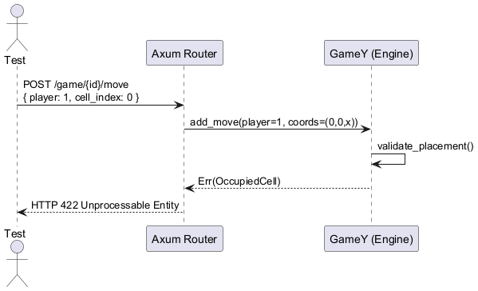
Motor del Juego "Y" (game.rs)
En este módulo se somete a prueba el núcleo lógico del sistema de forma totalmente aislada. Los tests unitarios validan las estructuras de datos que representan el tablero hexagonal y el estado de la partida:
-
Geometría del tablero: Se verifica que el cálculo de coordenadas sea exacto (ej. comprobando mediante
test_interior_cell_has_six_neighborsque una celda central tiene 6 vecinos, mientras que una esquina solo 2). -
Condición de Victoria: Se simulan secuencias completas de jugadas para asegurar que el algoritmo de grafos (Union-Find) detecta correctamente en qué momento exacto un jugador logra conectar los tres lados del triángulo (
test_winning_condition). -
Serialización: Se comprueba el round-trip de conversión bidireccional entre el estado en memoria de Rust y el estándar de notación YEN.
Estrategias e Inteligencia Artificial (monte_carlo_bot.rs)
Las pruebas de los módulos de IA garantizan que los bots devuelven jugadas legales, sin colgar el servidor ante casos límite. Para testear algoritmos probabilísticos como Monte Carlo, se evalúan escenarios cerrados donde la lógica debe ser determinista. Entre otros casos, se verifica:
-
Que el bot devuelve una respuesta nula (
None) si se le envía un tablero ya lleno (test_monte_carlo_returns_none_on_full_board). -
Que el algoritmo reconoce prioridades críticas: se le suministra un tablero preconfigurado a un solo movimiento de ganar, comprobando que el bot ignora el resto de celdas y elige obligatoriamente la coordenada de victoria inmediata (
test_monte_carlo_takes_immediate_win).
12.2. Pruebas End-to-End (E2E)
Las pruebas E2E tienen como objetivo validar el flujo completo del sistema, desde la interfaz de usuario hasta la base de datos, asegurando que todas las piezas integradas funcionen como se espera en un entorno similar a producción.
A diferencia de los tests unitarios, las pruebas E2E no se centran en funciones aisladas, sino en historias de usuario completas. Esto nos permite detectar fallos en las integraciones con servicios externos y problemas de estado en la persistencia de datos.
12.2.1. Casos de uso cubiertos
En este apartado se muestran algunos de los casos cubiertos:
Registro de un nuevo usuario
Descripción: Valida que un usuario pueda crear una cuenta desde cero cuando los datos son válidos y el servidor está disponible.
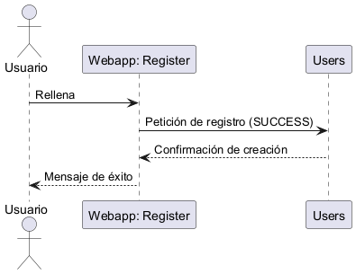
Autenticación de Usuario (Login)
Descripción: Verifica el flujo de acceso al sistema y la redirección correcta al menú principal tras un login exitoso.
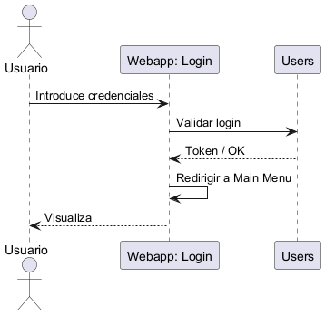
Partida contra la CPU (Estrategia)
Descripción: Comprueba que el motor de juego gestione correctamente los turnos automáticos del Bot según la dificultad y la estrategia seleccionada una vez empezada la partida.
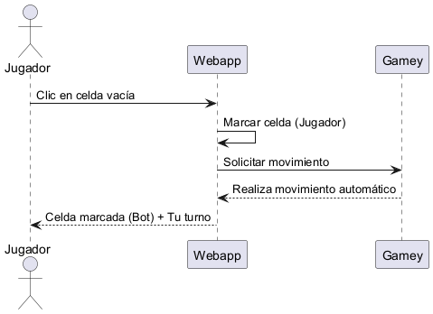
Finalización y Reinicio de Partida
Descripción: Garantiza que, tras abandonar o terminar una partida, el usuario pueda volver a jugar inmediatamente sin errores de estado.
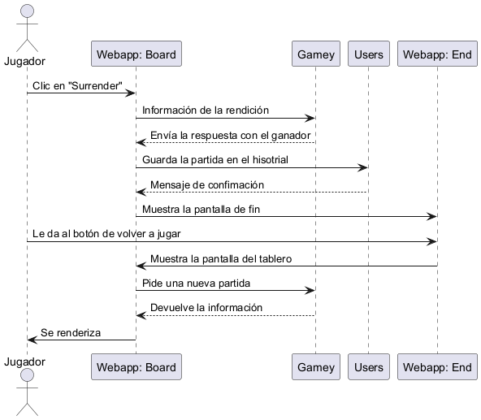
Consulta de Estadísticas e Historial
Descripción: Verifica la integración con el Datahub para mostrar el histórico de partidas y la aplicación de filtros (ej. victorias).
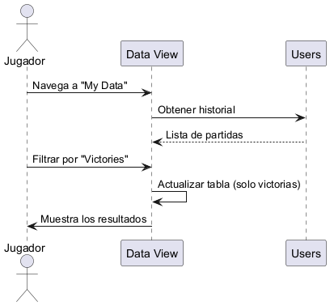
12.3. Grafana y Prometheus
Para la monitorización del lado servidor se han utilizado Prometheus y Grafana. Prometheus actúa como recolector y almacén de métricas del modulo users, el único del que se recolectan datos. Mientras que Grafana consume esos datos y los visualiza en dashboards interactivos.
12.3.1. Dashboard: Monitorización del Servicio de Usuarios
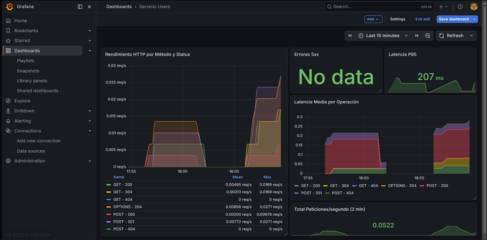
Este dashboard recoge las métricas más relevantes del servicio de usuarios. A continuación explicamos cada uno de ellos un poco más en detalle:
Rendimiento HTTP por Método y Status
Muestra la tasa de peticiones por segundo (req/s) de cada método HTTP
junto con su código de respuesta a lo largo del tiempo. Esto permite identificar de un vistazo qué tipo de operaciones generan más tráfico y detectar anomalías en el comportamiento del servicio.
A pesar de que la muestra es bastante pequeña (solo de los últimos 15 minutos), vemos una clara preponderacia de los métodos POST-201 (recursos creados correctamente) y OPTIONS-204 (peticiones generadas automáticamente por el navegador al comunicarse con la API), lo cual es un comportamiento esperado en una aplicación React con backend separado.
Errores 5xx
Este panel muestra el número de errores de servidor (códigos HTTP 5xx) por unidad de tiempo. Su objetivo es detectar fallos críticos en el servicio de forma inmediata.
El panel no muestra ninguno ya que el servidor ha sido capaz de manejar la carga sin problemas, lo cual es un indicador positivo de la estabilidad del sistema. Pero podría configurarse para que emitiese alertas en caso de detectar un aumento inusual de errores, lo que ayudaría a prevenir caídas del servicio.
Latencia P95
El percentil 95 de latencia nos indica el tiempo de respuesta máximo por debajo del cual se encuentran el 95% de las peticiones. Esto nos ayuda a ver el tiempo máximo que un usuario puede esperar para recibir una respuesta en condiciones normales de uso quitando aquellos casos excepcionales que podrían distorsionar la percepción del rendimiento.
El valor registrado durante las pruebas es de 207ms, lo cual es un resultado satisfactorio para una aplicación web con base de datos.
Latencia Media por Operación
Esta nos ayuda a desglosar la latencia media de cada tipo de operación (registro, login, consulta de historial…), permitiéndonos identificar cuales son las llamadas más lentas.
En este caso se observa que las operaciones POST presentan una latencia mayor (hasta 0.3s) que las peticiones GET, lo cual es lógico, ya que las operaciones de escritura tienden a ser mucho más costosas que las de lectura.
Total Peticiones/segundo
Por último tenemos la cantidad total de peticiones por segundo recibidas por el servidor. Permite tener una visión general del volumen de tráfico en tiempo real.
Durante las pruebas se registra un valor de 0.0522 req/s, el cual está dentro de las métricas esperadas.
12.3.2. Conclusiones
Los datos obtenidos durante las pruebas muestran un servicio estable, sin errores de servidor y con tiempos de respuesta aceptables. Pero hay que recordar que se está usando una muestra muy pequeña y una carga bastante nimia. Ya que esto no es una prueba de carga, si no una muestra de la monitorización de la aplicación.
12.4. Pruebas de Carga
Las pruebas de carga evalúan la capacidad de respuesta del sistema bajo condiciones de uso intensivo y estrés. Para el proyecto Yovi, se han diseñado pruebas de estrés utilizando Gatling para validar la robustez del servidor desarrollado en Rust.
12.4.1. Escenario de Prueba
Se generó el script TestCargaLoginJugar.scala para simular un flujo de usuario completo y realista. El escenario incluye:
-
Autenticación: Petición POST /login.
-
Inicialización: Petición POST /game/new (partida contra invitado).
-
Interactividad: Ciclo de 4 movimientos mediante POST /game/{id}/move.
-
Finalización: Acción de rendición y guardado automático en el historial (POST /savegame).
Para simular el comportamiento humano real, se han intercalado tiempos de lectura o de pensar la jugada (pause(1), pause(3)….) entre cada petición.
12.4.2. Configuración de Carga e Inyección:
Se estableció una estrategia de Ramp-up para observar la degradación progresiva del servicio:
-
Usuarios concurrentes: 50.
-
Periodo de inyección: 30 segundos.
-
Instrucción: rampUsers(50).during(30.seconds).
12.4.3. Analisis de Resultados y Gráficas
Para evaluar el comportamiento del sistema, se han extraído las siguientes gráficas del informe generado por Gatling:
Distribución Global y Rangos de respuesta
Esta primera imagen presenta un resumen global de la ejecución a través de dos gráficas:
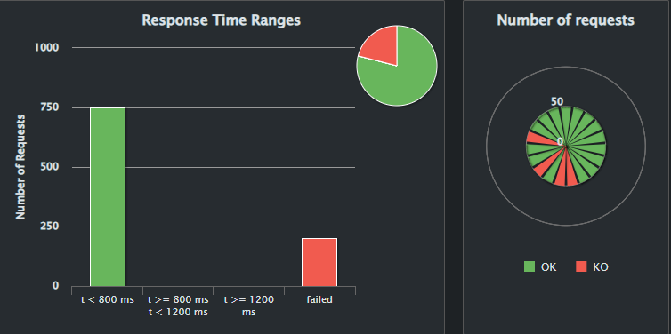
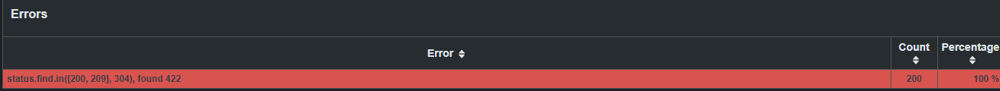
-
Response Time Ranges (Izquierda): Clasifica los tiempos de respuesta del servidor en rangos de calidad. Como se puede observar, el 100% de las peticiones exitosas (las 750 representadas en la barra verde) se resolvieron en menos de 800 ms, ubicándose en el rango óptimo de Gatling. No se registró ninguna petición en los rangos de latencia media (800-1200 ms) ni alta (>1200 ms).
-
Columna "Failed" y Gráfico Circular: La barra roja de la izquierda y los segmentos rojos del gráfico circular representan las 200 peticiones clasificadas como "KO". Es crucial destacar que, tras analizar los logs, todas corresponden a respuestas HTTP 422 (Unprocessable Entity). Esto confirma que el motor del juego en Rust funciona perfectamente bajo estrés: al realizar peticiones automatizadas a alta velocidad, el script intentó realizar movimientos ilegales (pisar fichas ya colocadas). El servidor analizó la petición, aplicó las reglas del juego Y, y bloqueó la trampa devolviendo el error correcto de forma inmediata.
Evolución de Carga y Rendimiento
Para entender cómo el servidor asimila la concurrencia a lo largo del tiempo, analizamos la inyección de usuarios frente a la capacidad de respuesta del sistema:
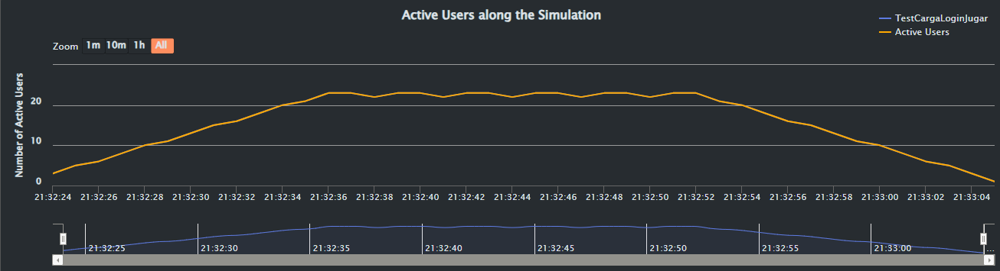
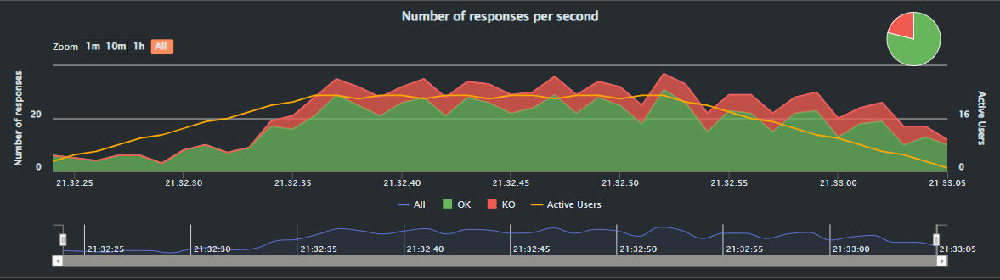
-
Asimilación de Usuarios: La primera gráfica muestra cómo la estrategia de inyección (ramp-up) logra mantener un pico estable de hasta 24 usuarios virtuales operando e interactuando de forma simultánea.
-
Throughput: La segunda gráfica demuestra el alto rendimiento del backend. El servidor es capaz de procesar y responder a picos de más de 30 peticiones por segundo sostenidas en el tiempo, sin evidenciar signos de saturación, encolamiento de peticiones o caídas de red.
Estabilidad de la Latencia
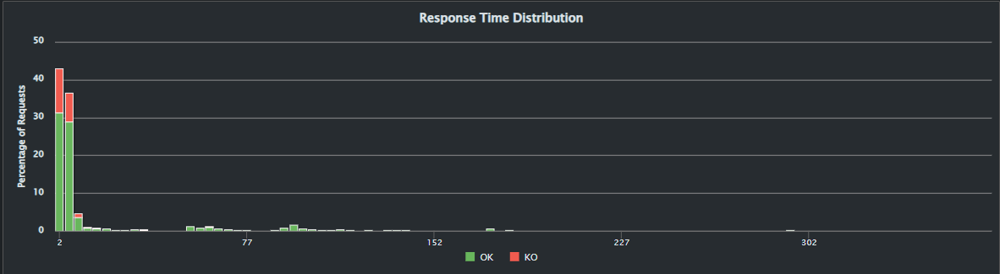
El histograma de distribución de tiempos de respuesta ilustra claramente la eficiencia del código en Rust. La abrumadora mayoría de las peticiones exitosas (la gran concentración de barras verdes a la izquierda) se resuelven en latencias mínimas, inferiores a 50 milisegundos. Esto garantiza una experiencia multijugador fluida y libre de lag.
12.4.4. Conclusiones de Rendimiento
Tras la ejecución y análisis de la prueba de carga, el equipo extrae las siguientes conclusiones sobre la arquitectura:
-
Solidez Arquitectónica: El servidor gestiona la concurrencia de 50 usuarios de manera correcta. No se han detectado fugas de memoria, caídas del servicio ni bloqueos de hilos. La latencia se mantiene estable independientemente de la carga de usuarios activos.
-
Seguridad y Condiciones de Carrera: Como se adelantó previamente, la totalidad de los 200 errores (HTTP 422) son una consecuencia de la configuración de la simulación. Al establecer pausas muy cortas (apenas 1 segundo para "pensar la jugada") combinadas con la alta latencia de inyección, se generaron escenarios donde los usuarios virtuales enviaban movimientos a una velocidad sobrehumana. Esto provocó intentos de ocupar casillas que habían sido reclamadas por el rival escasos milisegundos antes. El hecho de que el servidor respondiera con un 422 demuestra su robustez: el backend es capaz de auditar el estado del tablero en tiempo real, procesar la concurrencia correctamente y bloquear movimientos ilegales, validando así la integridad del sistema anti-trampas.
13. Glosario
| Term | Definition |
|---|---|
Backend API |
Servicio que centraliza la lógica de negocio, autenticación, gestión de partidas y comunicación con el motor de juego. |
Notación YEN (Y-game Exchange Notation) |
Formato estándar de comunicación del motor de juego que representa el estado completo de una partida del Juego Y en un instante de tiempo. Se expresa como un objeto JSON con cuatro campos:
|
Bot Externo |
Programa desarrollado por terceros que compite contra el motor de juego del sistema
mediante la API REST, enviando y recibiendo movimientos en notación YEN a través del
endpoint |
JSON (JavaScript Object Notation) |
Formato ligero de intercambio de datos utilizado para la comunicación entre frontend, backend y bots a través de la API REST. |
WebSocket |
Protocolo de comunicación bidireccional en tiempo real utilizado para actualizar el estado de la partida sin recargar la página. |
HTTPS |
Protocolo seguro de comunicación utilizado para proteger la transmisión de datos entre clientes y servidores. |
Microservicio |
Servicio independiente que implementa una funcionalidad específica y puede desplegarse de forma autónoma. |
Docker |
Plataforma de contenedorización utilizada para empaquetar y desplegar los componentes del sistema de forma portable. |
ADR (Architecture Decision Record) |
Documento que registra decisiones arquitectónicas relevantes junto con su justificación. |
GameRecord |
Objeto de datos persistido que contiene el resumen de una partida: jugadores, resultado (victoria/derrota), tamaño del tablero y marca de tiempo. |
Historial Filtrado |
Funcionalidad que permite la recuperación selectiva de registros basada en criterios de búsqueda específicos para facilitar el análisis de rendimiento del usuario. |
Ranking Global |
Tabla de clasificación pública que muestra los diez mejores jugadores ordenados por puntuación. La puntuación pondera victorias según la dificultad del rival derrotado y aplica un factor de confianza estadística que penaliza muestras pequeñas. |
Puntuación Ponderada |
Valor numérico calculado automáticamente por el sistema para cada usuario a partir de su historial de partidas. Tiene en cuenta la dificultad del oponente, el ratio de victorias contra ese oponente y un factor de confianza estadística basado en el número de partidas jugadas. |
Factor de Confianza © |
Componente de la fórmula de ranking definido como |